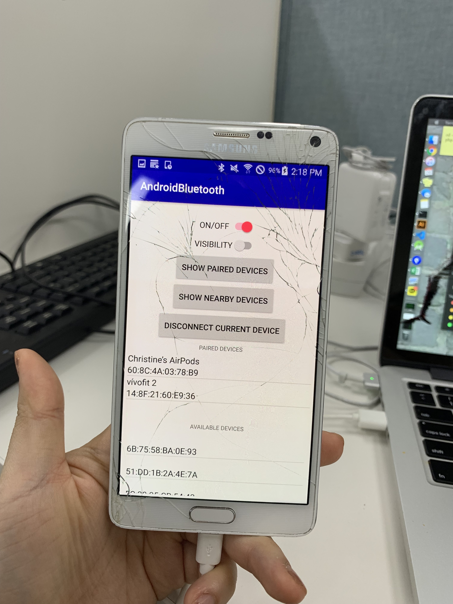
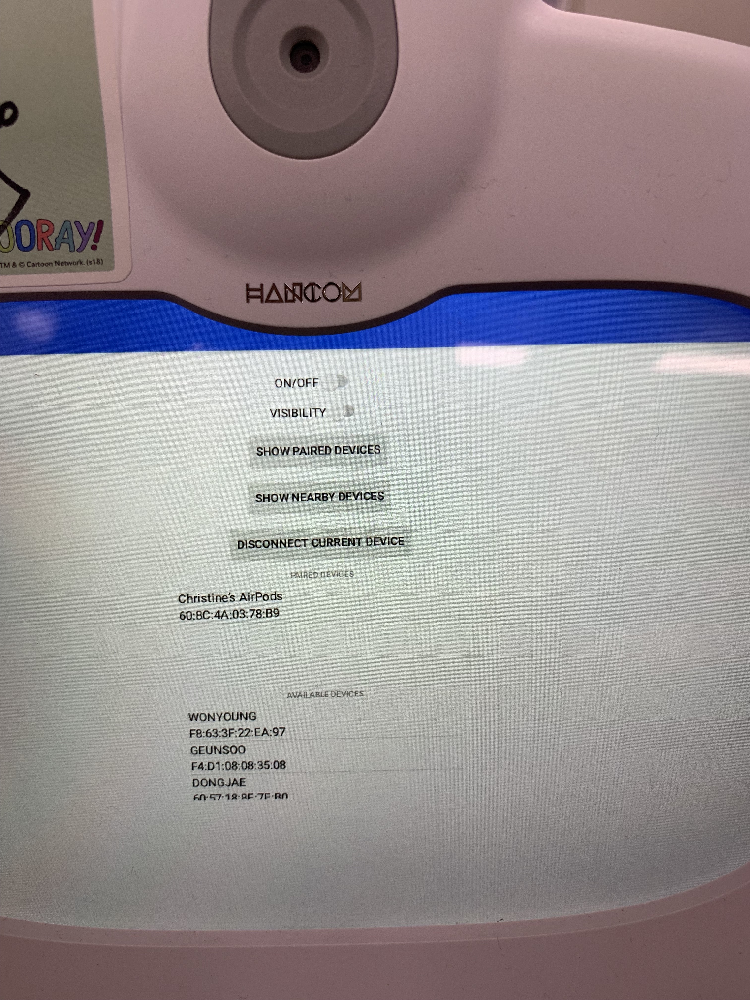
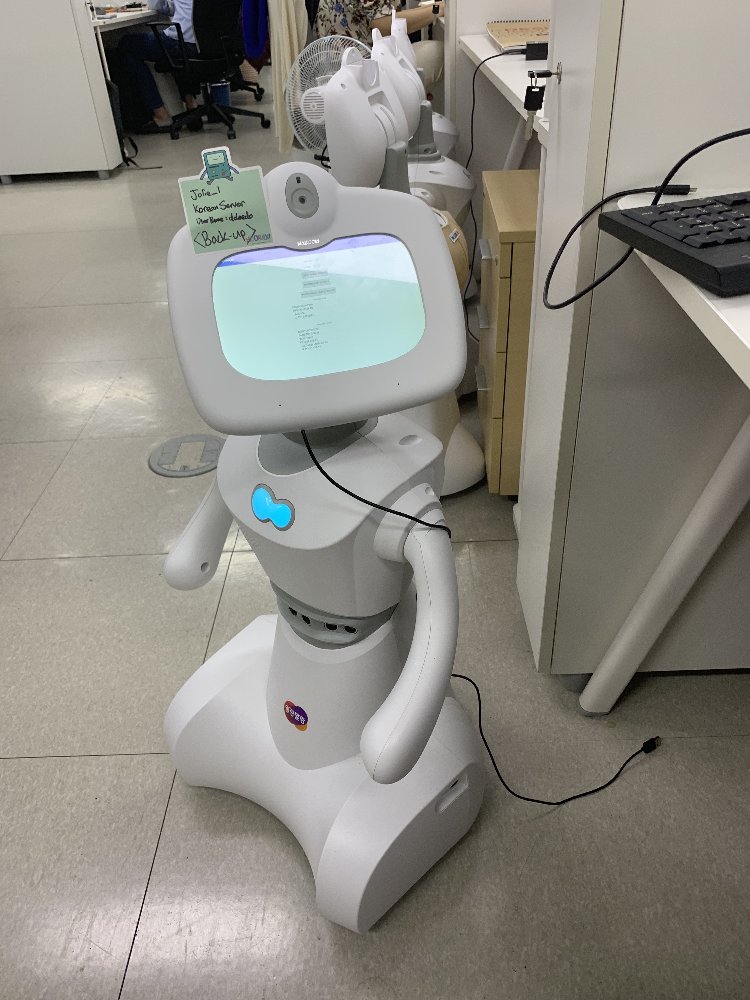

bluetooth
Say hello to Toki! Toki is a cute little robot developed by Hancom Robotics, where I interned this past summer.

Toki is an educational home robot that teaches English to pre-school and elementary school children through verbal dialogue exchange and quizzes.
It is intended to be utilized both at home for casual conversation and classrooms and schools and English academies.
One of the biggest problems that we encountered when testing the robot at various academies was that in classroom environments where there are numerous students conversing with each other at once,
Toki often had a difficult time discerning the voice of the student that it was speaking with.
After contemplating for several days with the software engineering team as well as the product managers, and we eventually came up with the idea of
connecting a bluetooth headset with Toki so that the student can speak into a mic that will pick up their voice better, and also be able to hear the robot more clearly through headphones.
I utilized Android Studio (Java) to create an application for the robot that would:
1. Turn bluetooth functionality on and off
2. Make Toki discoverable to nearby bluetooth devices
3. display all nearby bluetooth headsets
4. display all paired devices
5. allow the user to pair and connect to nearby devices
6. allow the user to connect to already paired devices
7. disconnect with devices
8. unpair with devices
I was unable to snap a photo of the final product, but here are some progress shots of me first testing the functionality on a phone (for convenience), and then trying it on the robot itself!


